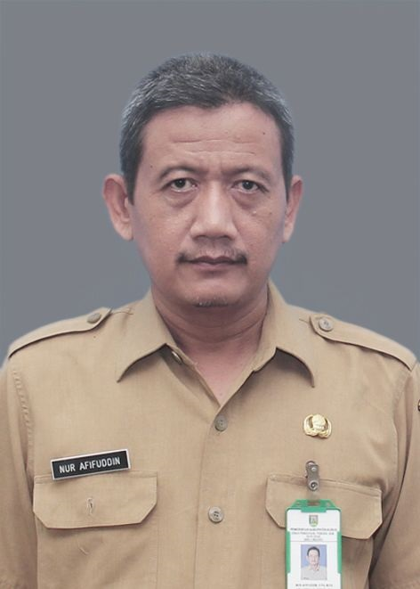

Berkarakter, unggul, dan berwawasan budaya bangsa.
Kenali Sekolah Kami
Assalamu'alaikum Warahmatullahi Wabarakatuh,
Selamat datang di website resmi SMAN 1 Kudus. Di era digital dan keterbukaan informasi, website sekolah menjadi jembatan interaksi antara sekolah dengan siswa, orang tua/wali murid, alumni, serta masyarakat luas.
Kami berharap seluruh civitas akademika dan masyarakat dapat dengan mudah mengakses informasi seputar kegiatan akademik, prestasi, program kerja, dan perkembangan terbaru sekolah. Dukungan, kritik, dan saran yang membangun sangat kami harapkan demi peningkatan mutu pendidikan.
Wassalamu'alaikum Warahmatullahi Wabarakatuh.
Nur Afifuddin, S.Pd., M.Pd.
Plt. Kepala Sekolah SMAN 1 Kudus